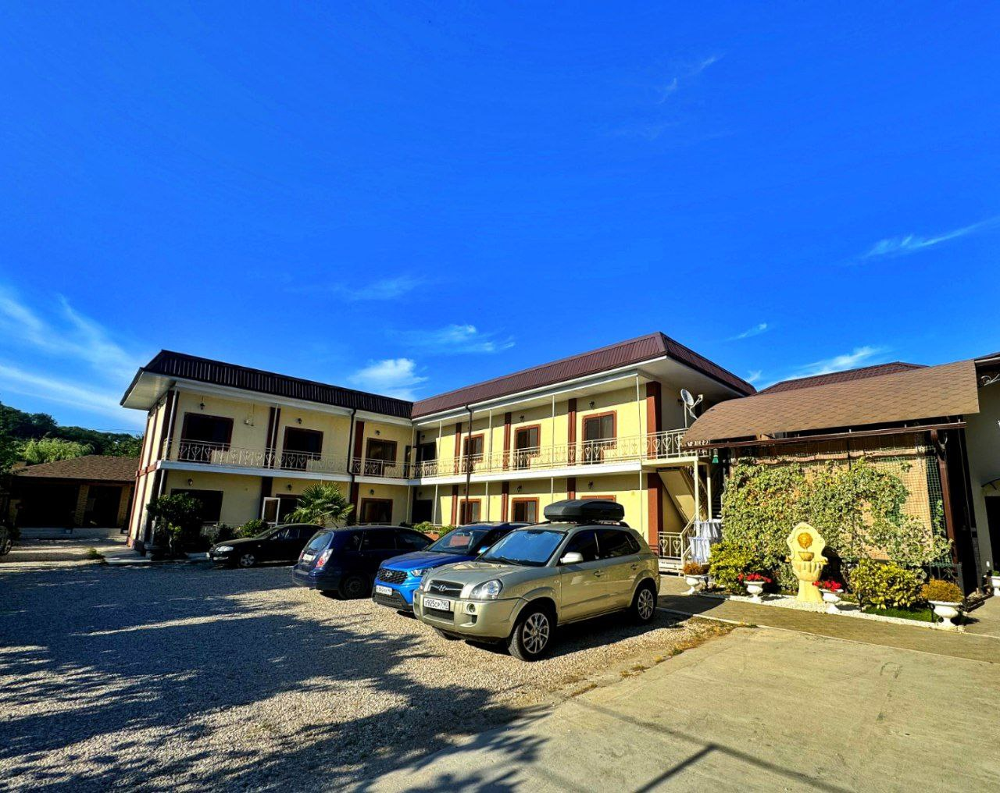
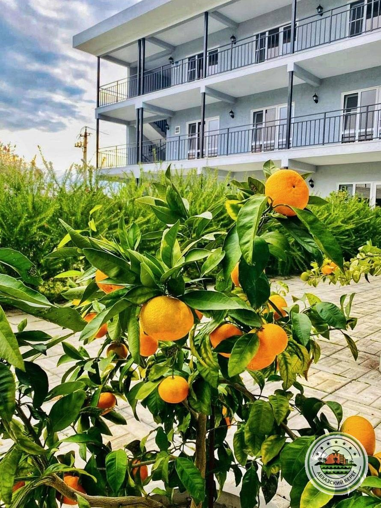
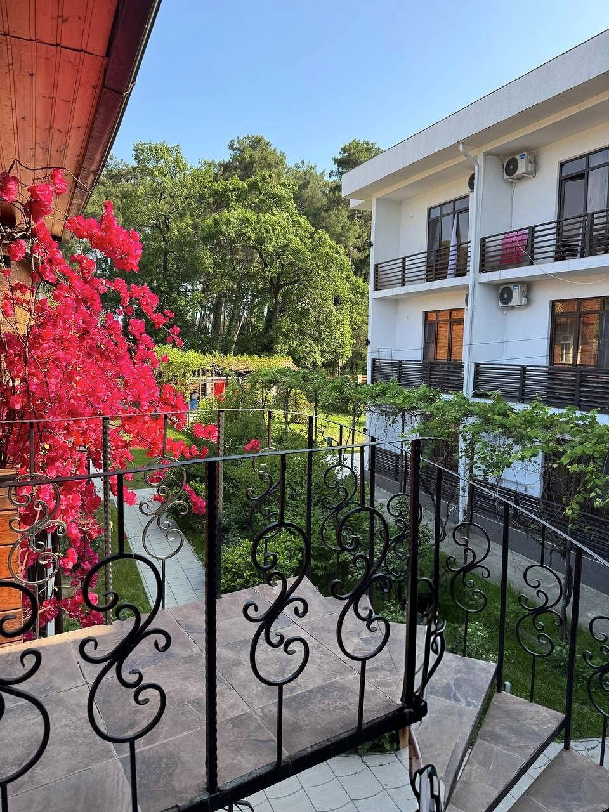
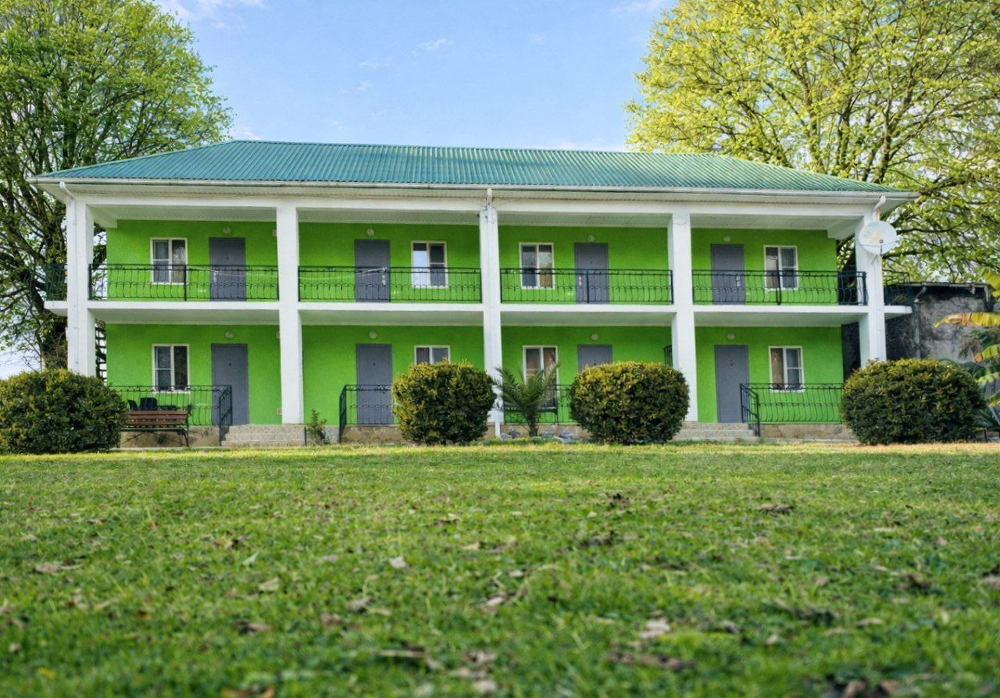
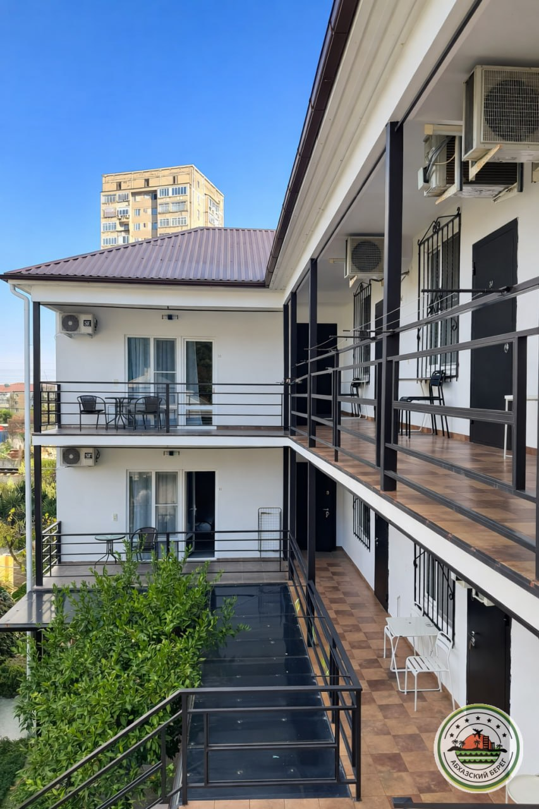

Отели с питанием / собственным кафе
Порядок в списке отражает приоритет подборки. Откройте карточку, чтобы посмотреть фото, видео и условия на сайте.
ЛДЗАА

"АКВАМАРИН" дом под ключ
🏖️ 10 мин до пляжа (песок)
столовая

"АНТАА" гостиница у пляжа
🏖️🌲 1 мин до пляжа (сосновый галечный)
Свое кафе

"АССИР" гостевой дом
🏖️ 3 мин до пляжа (песок/мелкая галька)
Своя столовая

"БЛЭК СИ" отель с бассейном и питанием
🏖️🌲 7 мин до пляжа (сосновый галечный)
своя столовая, завтраки и ужины включены, обеды в баре за оплату по меню

"БУГЕНВИЛЛЕЯ" отель с бассейном
🏖️🌲 5 мин до пляжа (сосновый галечный)
Своя столовая

"ГРАНТ" апартаменты
🏖️🌲 7 мин до пляжа (сосновый галечный)
Свое кафе, завтраки включены

"ГРАНТ" домики
🏖️🌲 7 мин до пляжа (сосновый галечный)
Свое кафе, завтраки включены

"ГРАНТ" отель
🏖️🌲 7 мин до пляжа (сосновый галечный)
Свое кафе, завтраки включены

"ЛАЗУРИТ" новый отель
🏖️ 3 мин до пляжа (песок/мелкая галька)
Свое кафе, завтраки включены

"ЛАЗУРНЫЙ БЕРЕГ" бутик-отель с питанием
🏖️ 1 мин до пляжа (песчаный)
Свое кафе, завтраки включены

"МАНДАРИН" отель у соснового пляжа в Лдзаа с завтраками
🏖️3 минуты до соснового пляжа
Свое кафе, завтраки включены

"МИКА" гостевой дом эконом
🏖️🌲 0 мин до пляжа (сосновый галечный)
Своя столовая

"МУЛБЕРРИ" с бассейном и кафе
🏖️ 0 мин до пляжа (песок/мелкая галька)
Своя столовая

"ПШАДА" отель с питанием у соснового пляжа
🏖️🌲 3 мин до пляжа (сосновый галечный)
Свое кафе, завтраки или питание опционно

"СИРИУС"
🏖️🌲 1 мин до пляжа (сосновый галечный)
столовая

"СОЛУНА" домики и номера
🏖️4 минуты до пляжа, мелкая галька/песок
завтраки включены

"ТИС" коттеджи у заповедника
🏖️🌲 1 мин до пляжа (сосновый галечный)
кафе

"ТИС" мини-отель у заповедника
🏖️🌲 1 мин до пляжа (сосновый галечный)
кафе
ПИЦУНДА

"АССИР ПИЦУНДА" гостевой дом в центре
🏖️15 минут до пляжа (сосновый галечный)
своя столовая

"МЕЛОДИ" домики
🏖️🌲5 минут пешком пляж галечный сосновый
возможность заказа питания в течение дня

"САМШИТ" домики и номера у заповедника
🏖️🌲 2 мин до пляжа (сосновый галечный)
Свое кафе

"ФАЗЕНДА" двухэтажные коттеджи с бассейном и питанием
🏖️🌲7 мин до пляжа (сосновый галечный)
Свое кафе, завтраки включены

"ФАЗЕНДА" отель с бассейном и питанием
🏖️🌲7 мин до пляжа (сосновый галечный)
Свое кафе, завтраки включены
ГАГРА

"БОХО" коттеджи у моря с бассейном и баней
🏖️ 0 мин до пляжа (галечный)
Свое кафе, завтраки включены

"ВИЛЛА ЛЕОНА" люкс-отель
🏖️ 4 мин до пляжа (галечный)
Трехразовое питание. Барная зона

"ПАРУС" видовой отель с бассейном и столовой
🏖️ 4 мин до пляжа (галечный)
Свое кафе

"САНРАЙЗ" гостевой дом с завтраками
🏖️10 минут пешком до пляжа
завтраки включены
АЛАХАДЗЫ

"АИША" отель с бассейнами
🏖️ 10 мин до пляжа (галечный)
Своя столовая и бар

"АКВА" отель с бассейном и завтраками
🏖️ 10 мин до пляжа (галечный)
Свое кафе, завтраки включены

"РИТА" домики и апартаменты с питанием
🏖️ 2 мин до пляжа (галечный)
Свое кафе
ГУДАУТА

"БЕЛАЯ РЕЧКА" гостевой дом с кафе
🏖️ 10 мин до пляжа (галечный)
столовая

"ЛИЛИЯ" отель
🏖️1 минута до пляжа, галечный
завтраки включены, шведский стол
НОВЫЙ АФОН

"МАНОН" отель со сказочным видом
🏖️ 15 мин до пляжа (галечный)
Свое кафе, завтрак опционно

"ЦАРСКОЕ СЕЛО АНХУА" коттеджи
🏖️ 7 мин до пляжа (галечный)
своё кафе
СУХУМ

"СИНОП ХАУС" коттеджи
🏖️ 5 мин до пляжа (песок)
можно заказать завтрак в домик

"У МОРЯ" домики
🏖️ 2 мин до пляжа (песчаный)
Свое кафе